Présentation Générale
Mes Expériences Professionnelles
- Sapeur-Pompier Volontaire
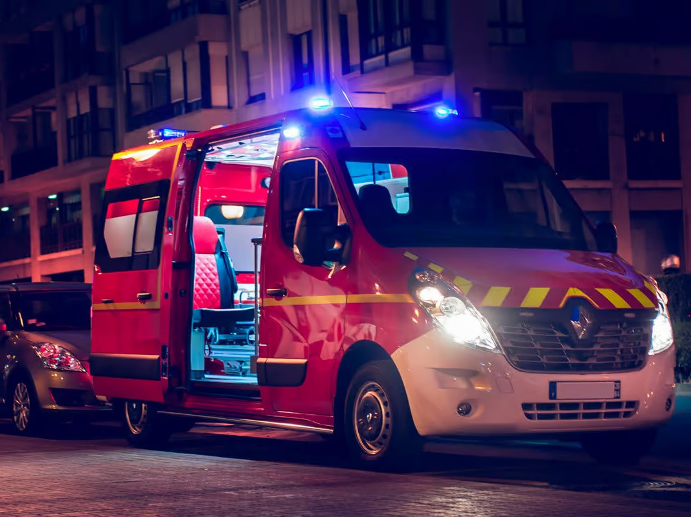
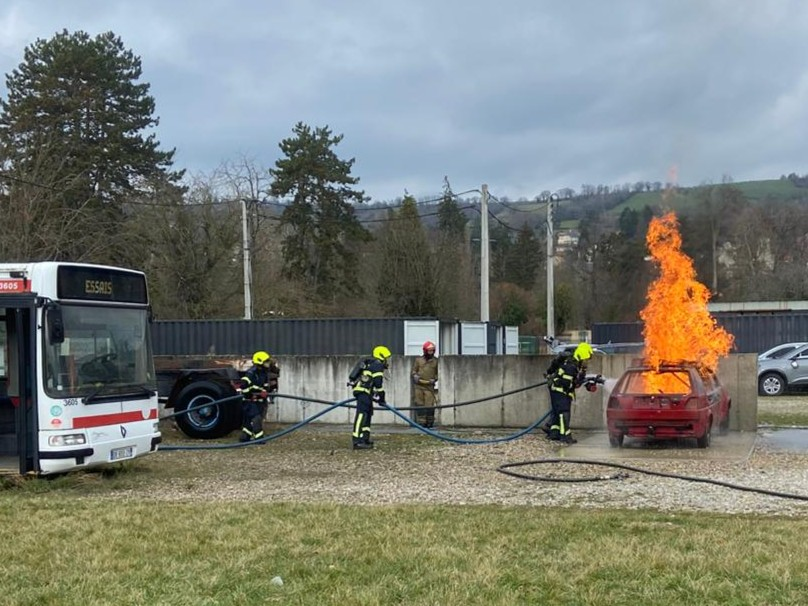
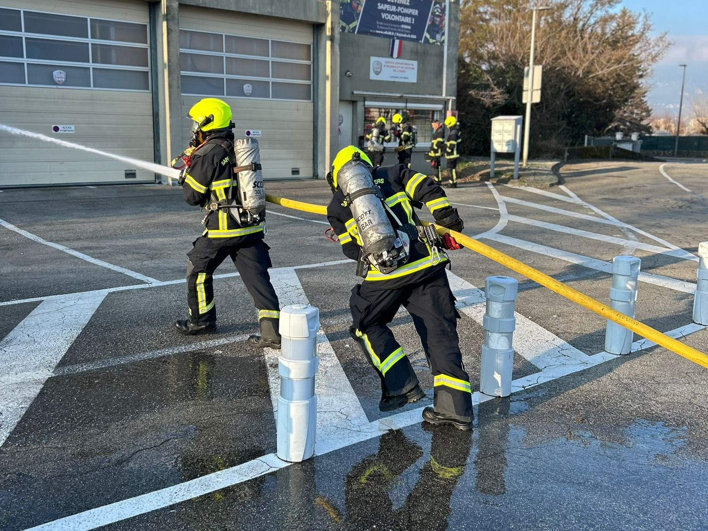
Depuis 2023, je suis engagée en tant que sapeur-pompier volontaire. Je participe régulièrement à des formations, des manœuvres d’entraînement ainsi qu’à des interventions sur le terrain afin de venir en aide à la population. Je peux être mobilisée pour tout type d’intervention : incendies, secours à personne, accidents de la route, situations d’urgence impliquant des animaux ou encore diverses opérations de protection. Chaque intervention est différente et demande une capacité d’adaptation rapide, du sang-froid et un esprit d’équipe solide. Je suis d’astreinte au minimum une fois par semaine ainsi qu’un week-end par mois, ce qui implique une grande disponibilité et une organisation rigoureuse entre mes études, ma vie personnelle et mon engagement. Je peux être appelée à tout moment, de jour comme de nuit, pour répondre à une urgence. Cet engagement m’a permis de développer des qualités essentielles telles que la discipline, le sens des responsabilités, la rigueur et le courage. Il m’a également appris à gagner en maturité rapidement, à gérer le stress et à travailler efficacement en équipe dans des situations parfois critiques. Il représente une part importante de ma vie et de mon développement personnel. - Coach de Tennis pour les 5 - 10 ans
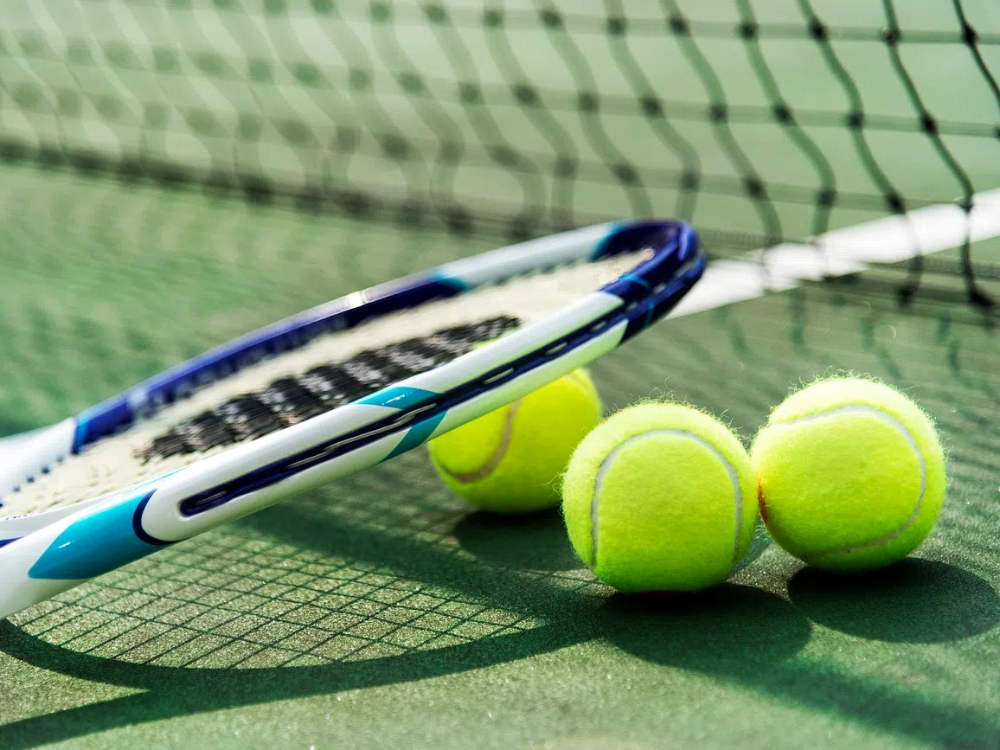
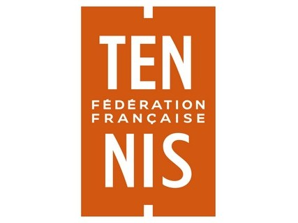
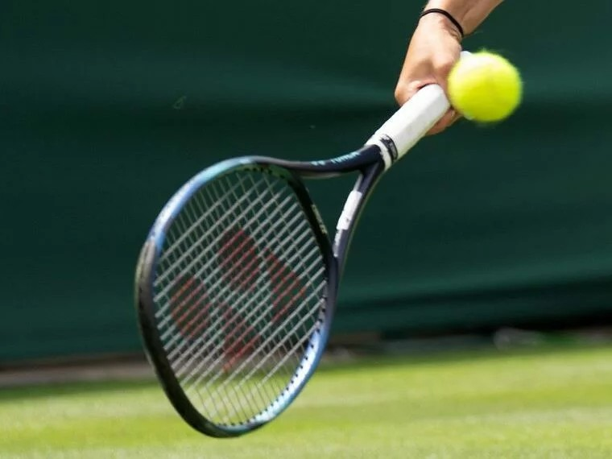
Mon coach de tennis ne pouvait plus assurer seul les cours de tennis du groupe des 5-10 ans. Il m'a laissé une moitié du groupe pour me faire progresser et faire évoluer les jeunes. J'ai dû m'occuper des enfants, de les cadrer et les corriger sur leur mouvement. Pour ma part, il y avait un gros travail de précision pour leur mettre de bonnes balles bien placées. Il m'a fallu de nombreuses idées pour leur trouver des jeux adaptés et différents à chaque séance. - Concours Général de Numérique des Sciences Informatiques
En Terminale, j'ai fini première de ma promotion de spécialité NSI. J'ai eu alors la proposition de faire une épreuve nation de 6 heures (le Concours Général de NSI) qui consistait à résoudre des problèmes algorithmiques plutôt complexes. Mon professeur m'a organisé des sessions de révisions et d'apprentissage plus poussé pour approfondir mes connaissances.
- BAFA
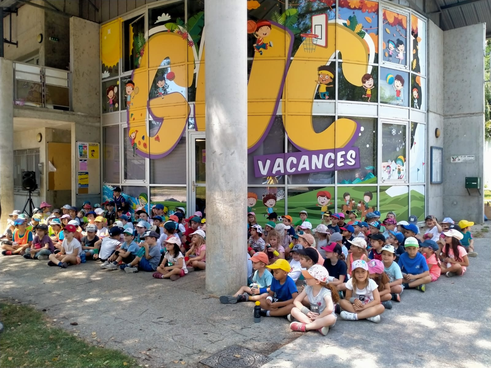
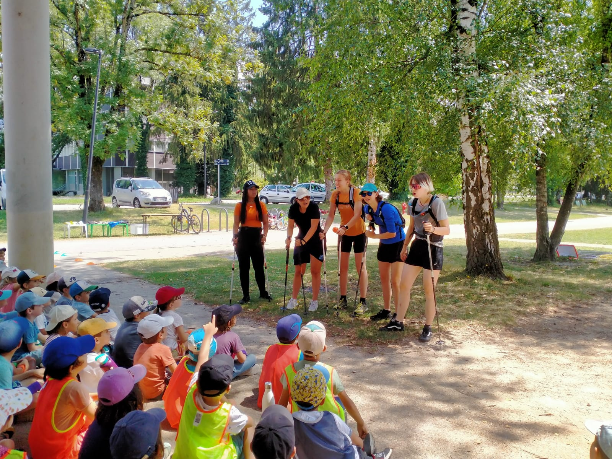
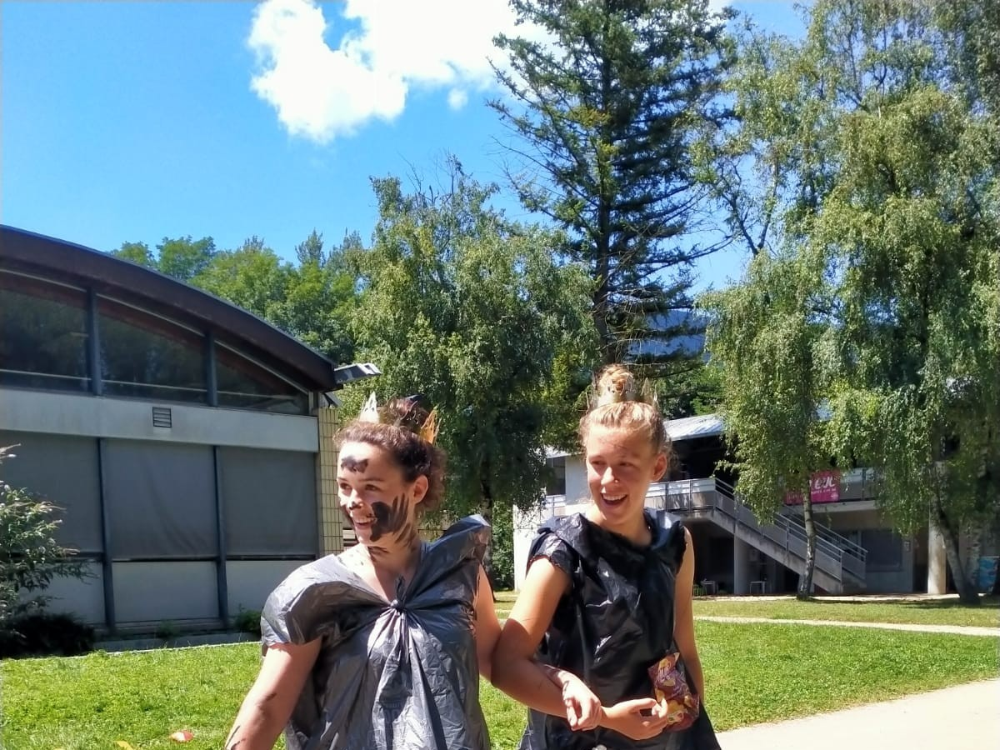
Passionnée par les colonies de vacances, par le sport et par l'animation, j'ai passé mon BAFA pour pouvoir encadrer les jeunes. Ayant le BAFA depuis 2022, pendant les vacances scolaires, je m'occupe d'enfants de 3 à 6 ans en centre de loisirs. Je m'occupe d'eux toute la journée, je prépare de nombreuses activités allant de la piscine aux repas. Je gère une dizaine enfants pendant la journée qui demandent une surveillance active et une attention particulière. - Monitorat
Après avoir eu de bons résultats en première, j'ai été contactée par mon lycée pour prendre en charge deux jeunes de secondes pour faire du tutorat. Toutes deux avaient de nombreuses difficultés scolaires et disciplinaires. J'avais la mission de les aider du mieux possible à apprendre, à comprendre et à s'intégrer. Pour l'une d'elles, ce fut très intéressant, je lui apprenais les mathématiques et la manière d'apprendre. Pour l'autre, c'était plutôt disciplinaire, je travaillais avec elle sur son ressenti et la façon d'aborder les choses.
- Babysitting
De temps en temps, je suis contactée par des parents intéressés pour garder leurs enfants. J'ai une famille principale mais les parents se passent le message et mon réseau grossit. Je m'occupe d'aller les chercher à l'école, de préparer les repas, des transports, des couchers.
Mes Experiences Personnelles
- Obtention du permis B
- Championnat de France de VTT
Après plusieurs années de VTT, les compétitions et les qualifications se sont suivies. Je me suis retrouvée jusqu'en championnat UNSS de VTT à Lille pour concourir sur trois épreuves (le trail, la descente et le cross-country). Alors je me suis fortement entraînée et accrochée pour finir dans les meilleurs. L'équipe formée pour la compétition était très soudée, c'était notre force.
- SNU
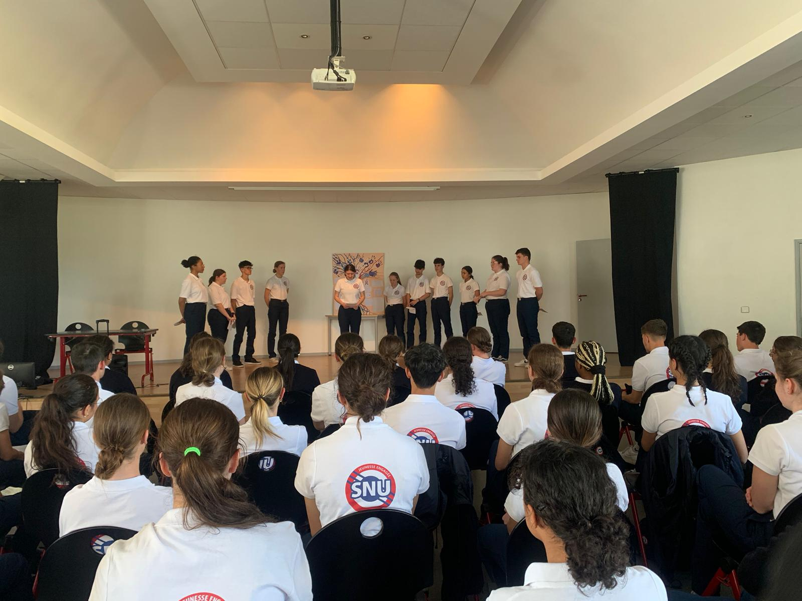
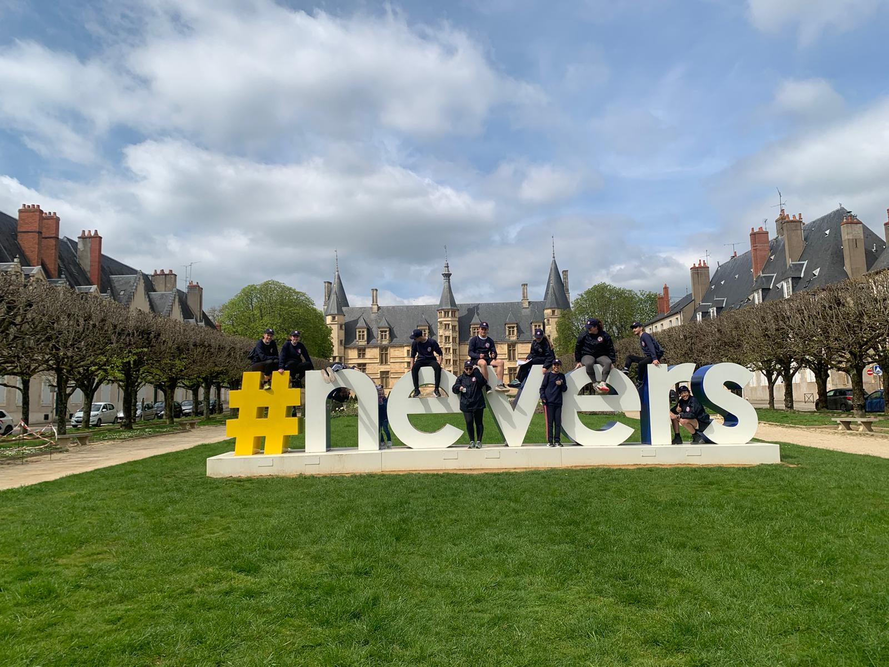
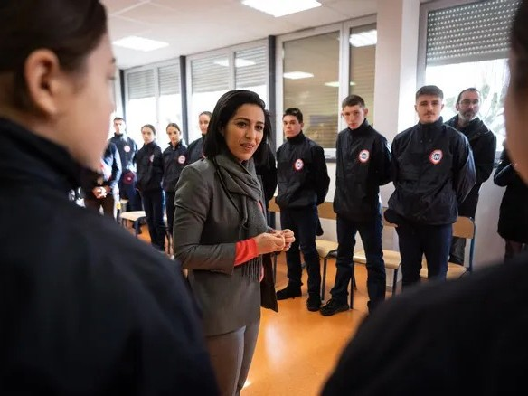
Pendant les vacances d'avril 2023, j'ai eu la chance de faire mon Service National Universel. Organisé par l'État, nous étions encadrés par l'armée. Nous faisions du sport, des entraînements militaires, des chants, des cérémonies, des créations manuelles, des cours d'histoire et des conférences sur l'État francais. - Chaine Youtube
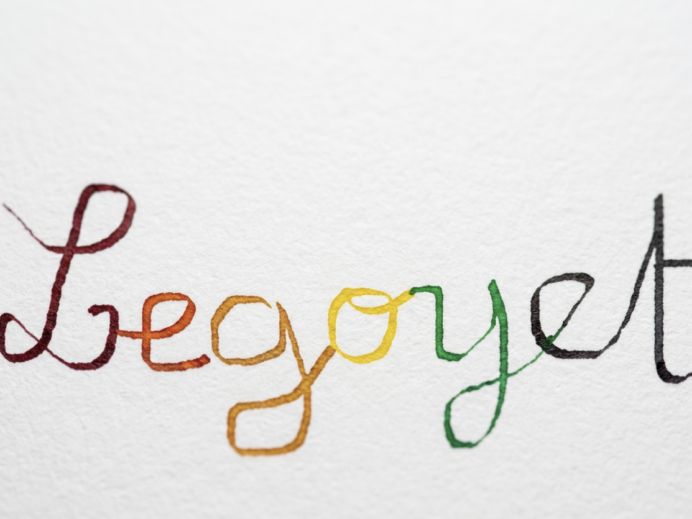
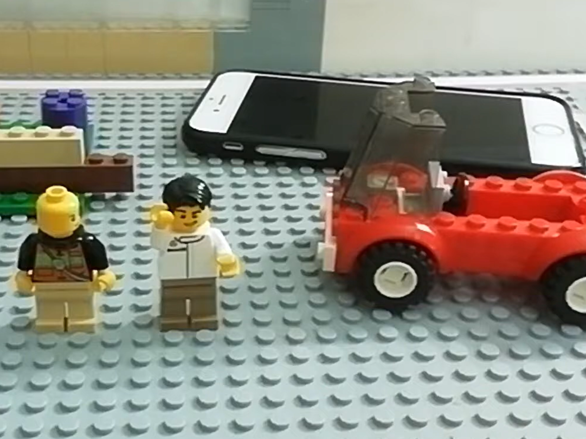
Passionnée de Lego et de création diverses, j'ai ouvert un chaîne Youtube de BrickFilm. Un brickfilm est un film d'animation réalisé image par image à base de Lego. Je crée tout type de vidéo avec ma famille allant d'une série à l'assemblage de petites bricks. - Voyage en sac à dos au Sri Lanka
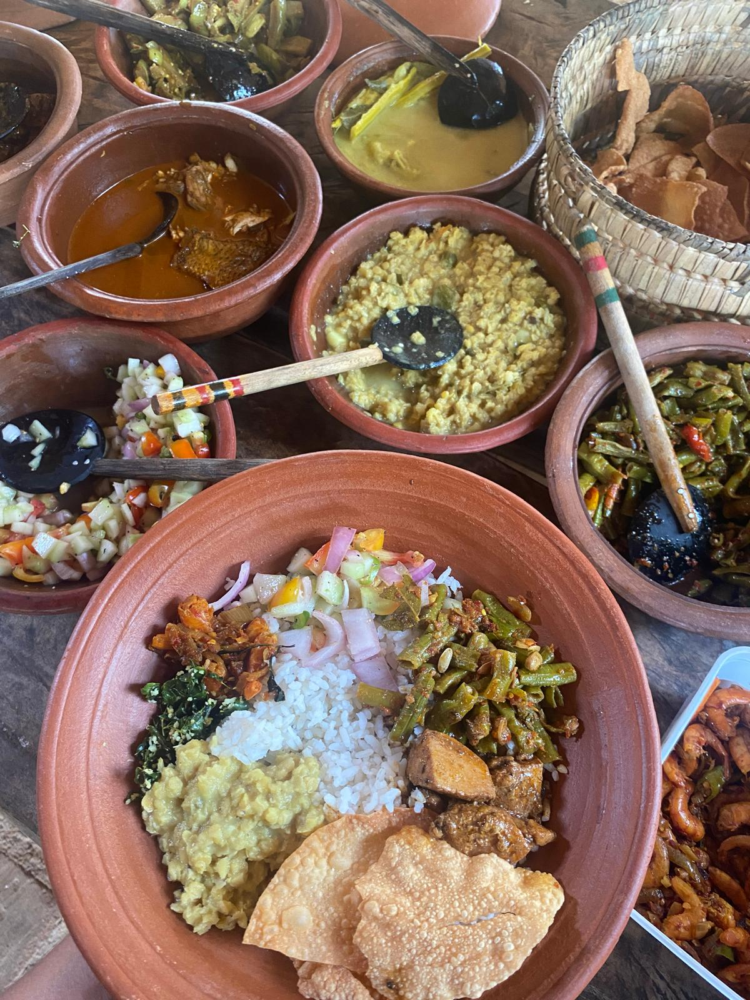
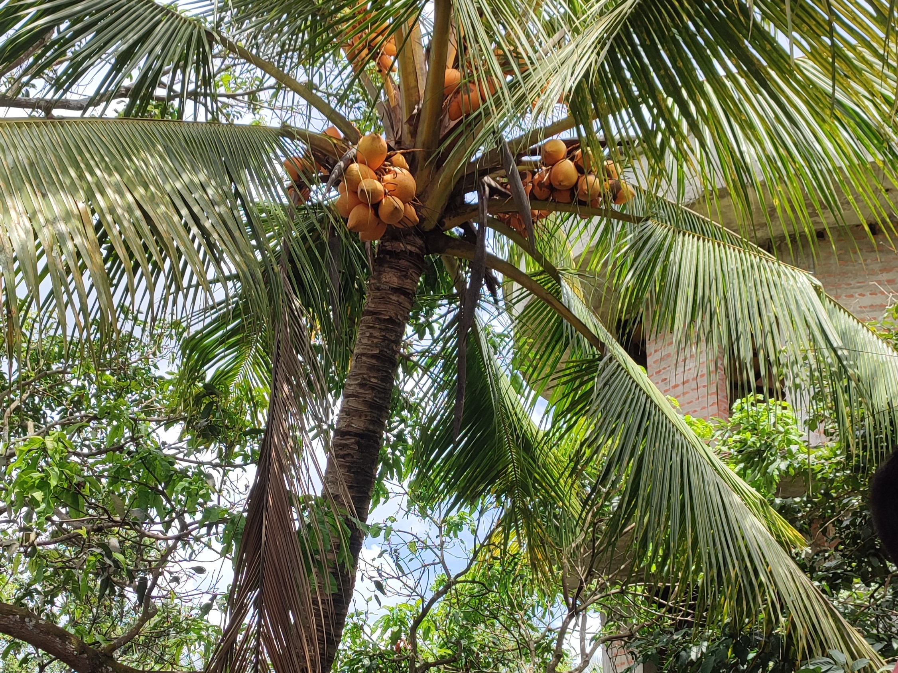
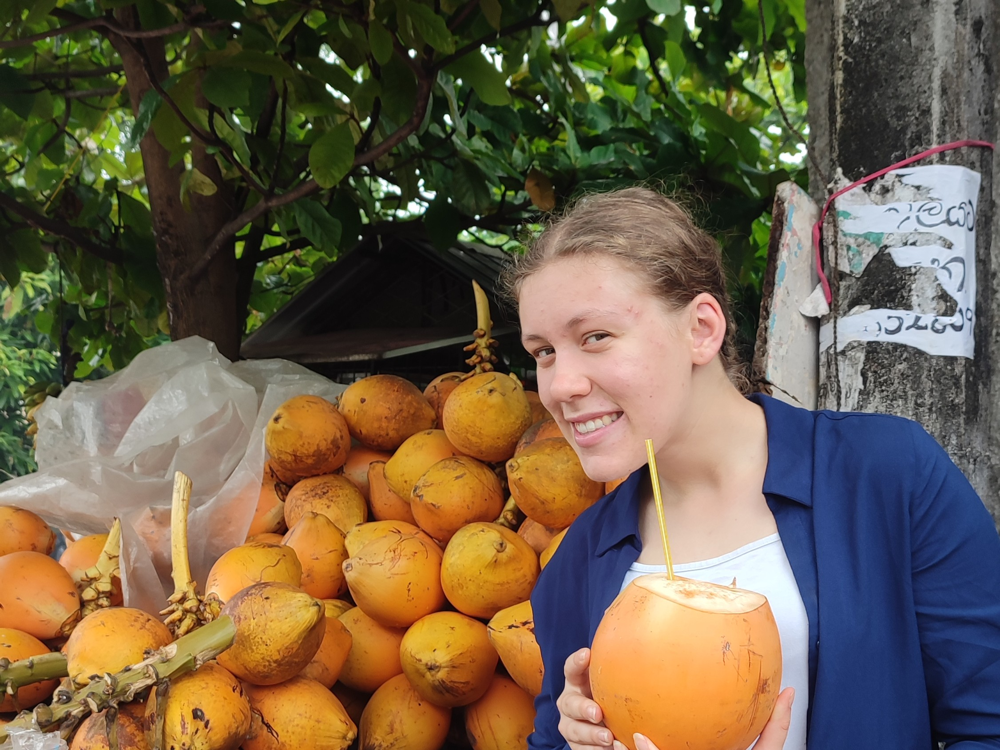
Après l’expérience au Canada, j’ai eu l’envie de repartir seul et de voir ma famille Canadienne. Nous sommes allés voir leur famille originaire de Colombo où j’ai pu faire énormément de rencontres. Pendant un mois, j'ai pu vivre une expérience de vie immersive et inoubliable Ce voyage m’a permis de progresser en langue mais aussi de rencontrer des personnes et d'apprendre de nouvelles cultures et traditions. - Echange Scolaire au Canada
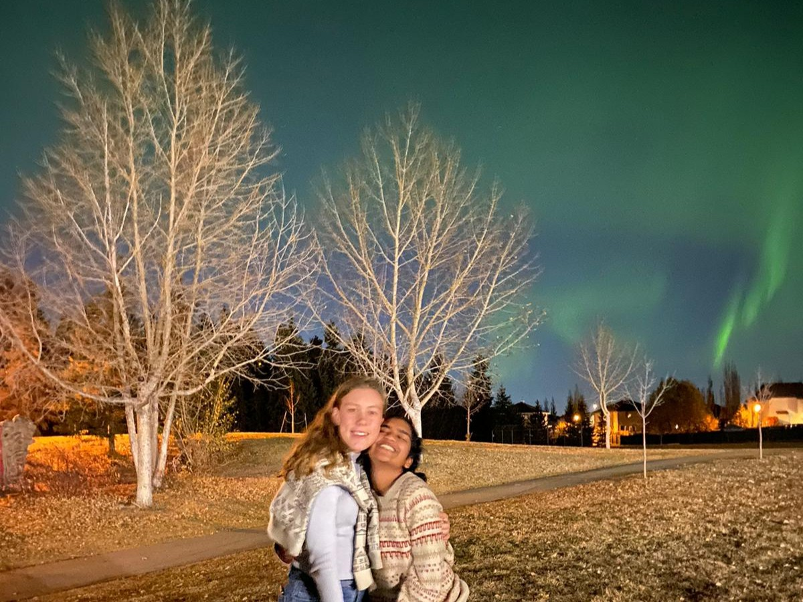
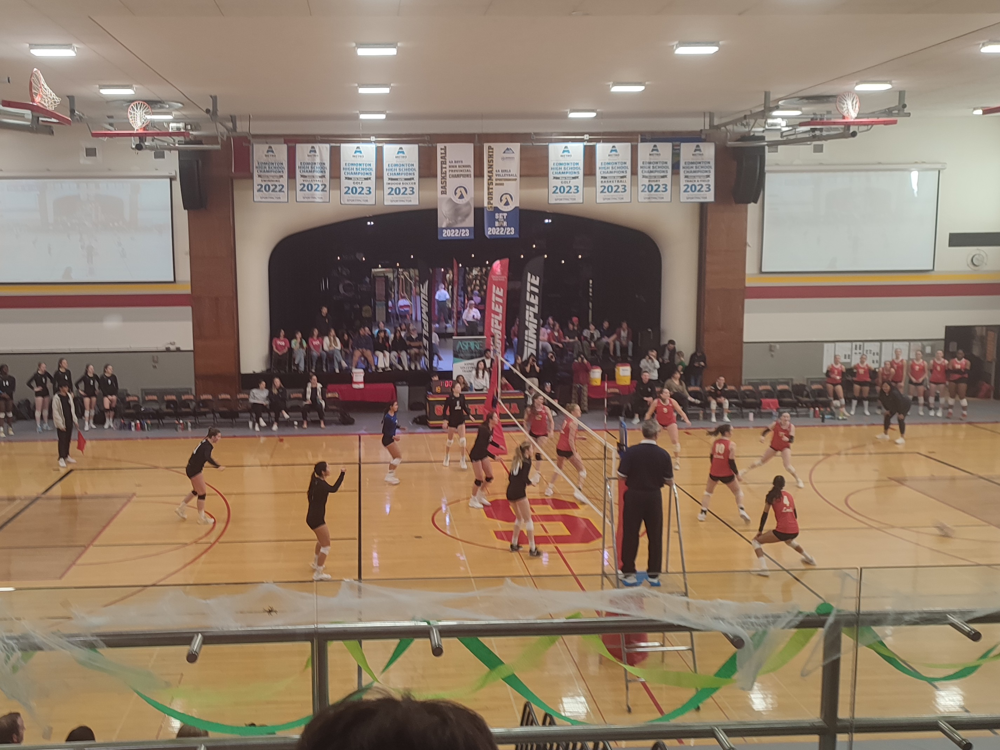
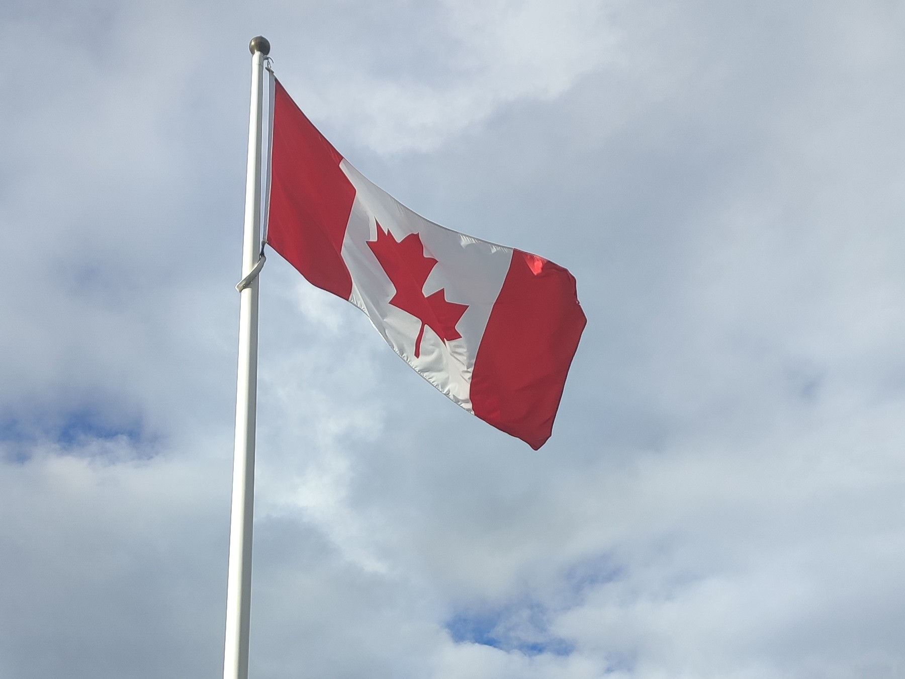
Pendant 2 mois, j’ai eu la chance de faire un échange scolaire avec une famille canadienne. J’ai vécu la vie comme une vraie Canadienne en allant en cours ou encore en partant en voyage à Vancouver. Ce voyage m’a fait grandir, progresser en anglais et m’a appris à me débrouiller seule. J’ai découvert des personnes formidables, aujourd’hui, ce sont des personnes de ma famille. Nous sommes toujours en contact ce qui permet de continuer à pratiquer l’anglais.
Scolarité
- BUT informatique à l'IUT de Grenoble (2025-2026)
- Lycée Marie Curie, bac mention bien en filière générale (2022-2025)
J'avais comme spécialités les Mathématiques, Numérique des Sciences Informatiques et la Physique-Chimie. J'avais en option les mathématiques expertes et le latin.
- Collège Louis Lumière, brevet mention très bien (2018-2022)
- Langues :
- LV1 : Anglais
- LV2 : Espagnol